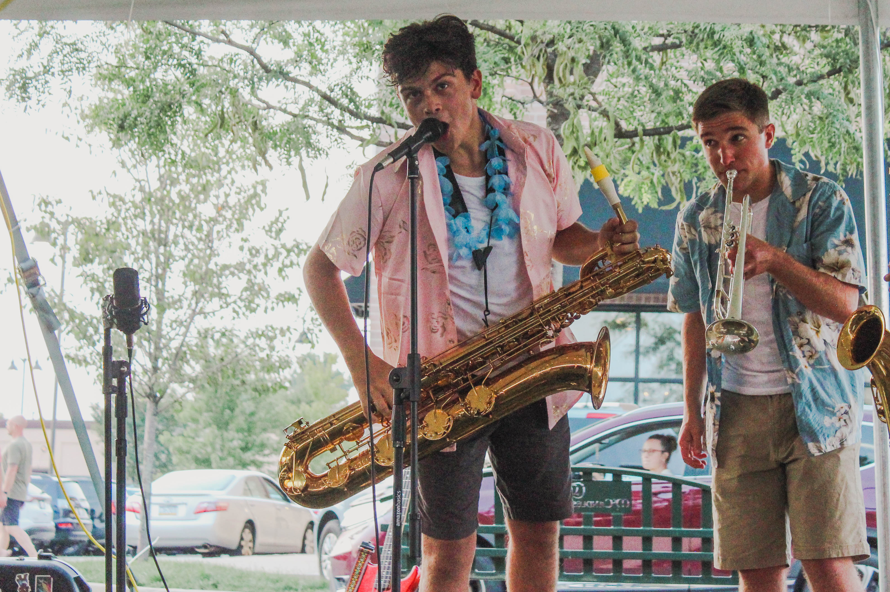

“I’m Ben Swihart and I play saxophone and clarinet for the 7 Degrees Brassband. I am the youngest musician in the band. My first instrument was alto sax. I started bari in 6th grade, and I picked up bass clarinet in 8th grade. I’m the bari sax player in North Allegheny's jazz ensemble 1 and I play in various honors bands and other groups. Besides music I take a large interest in photography and videography. My favorite song of ours is Battle Hymn" - Saxophonist and Clarinetist, Ben Swihart
Check out Ben Swihart on Instagram!